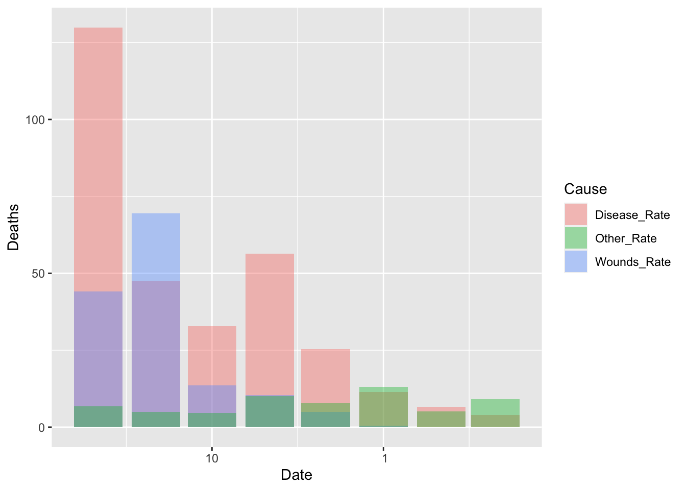
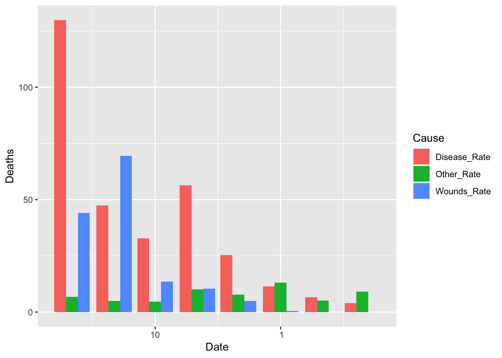
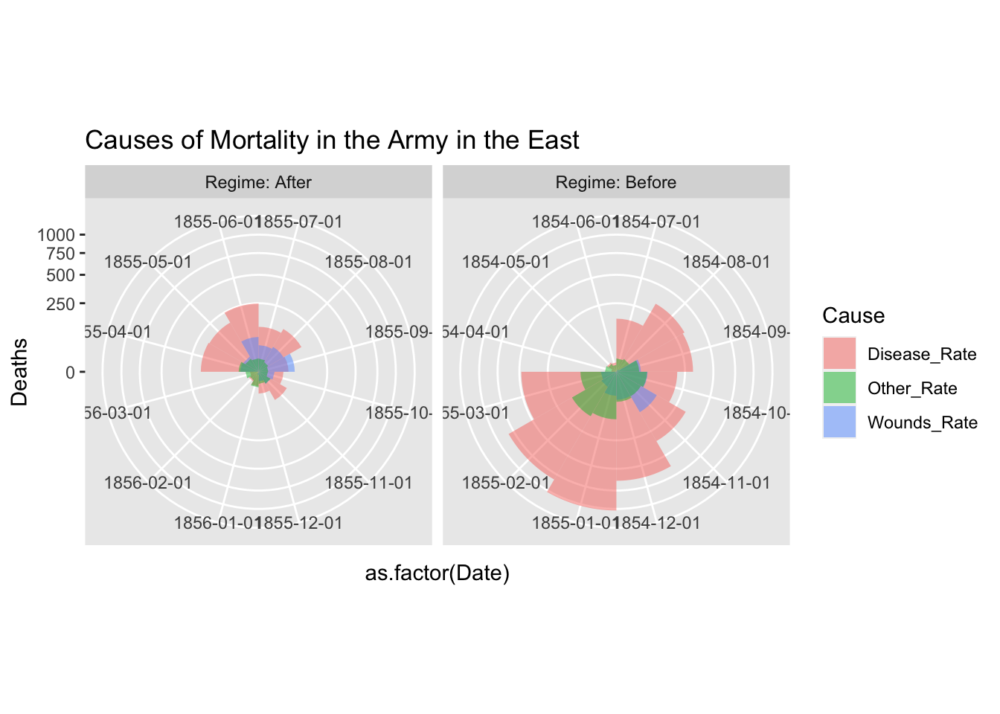
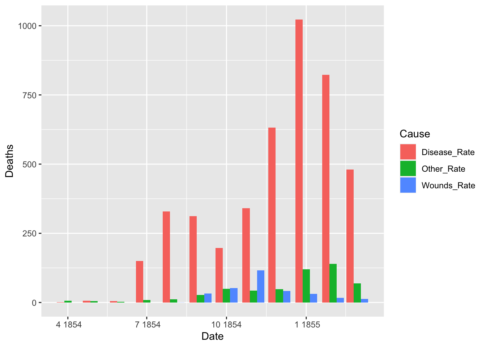
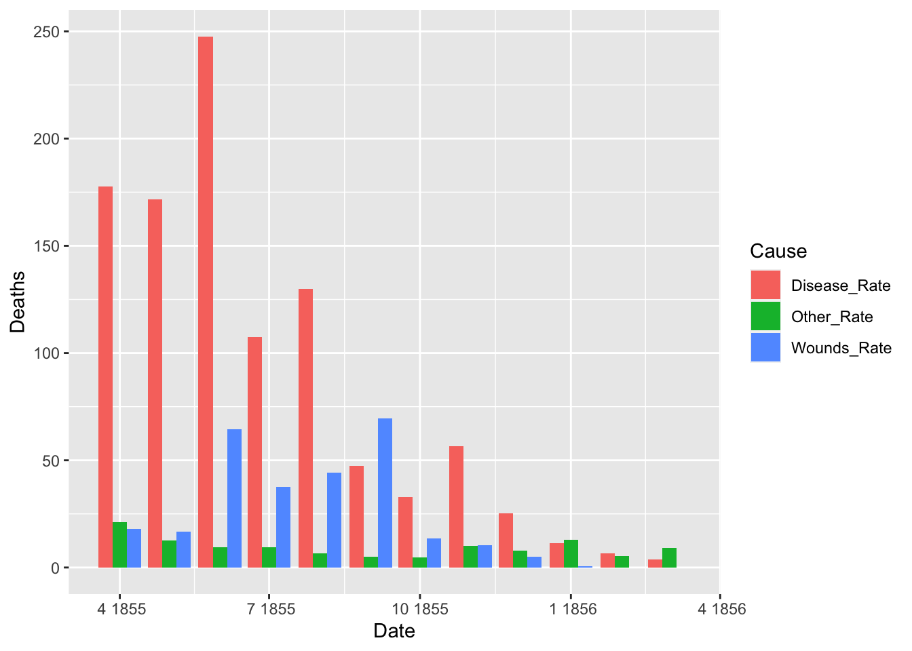
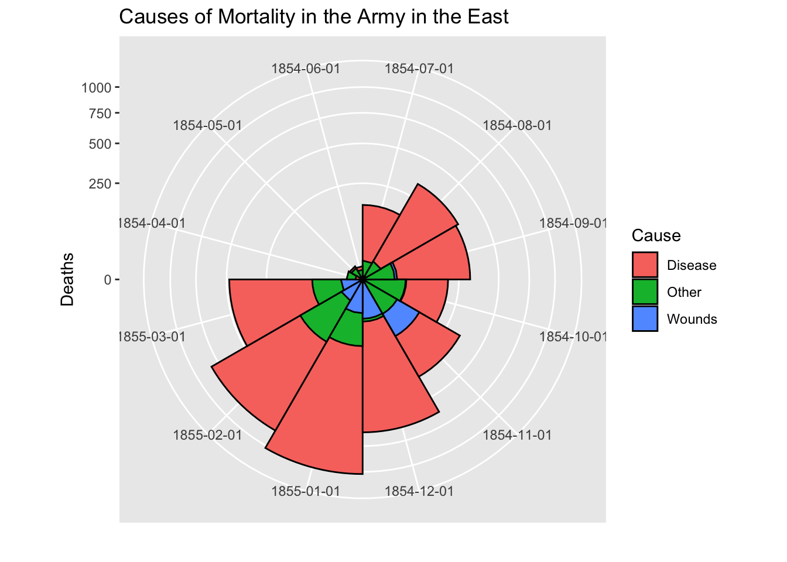
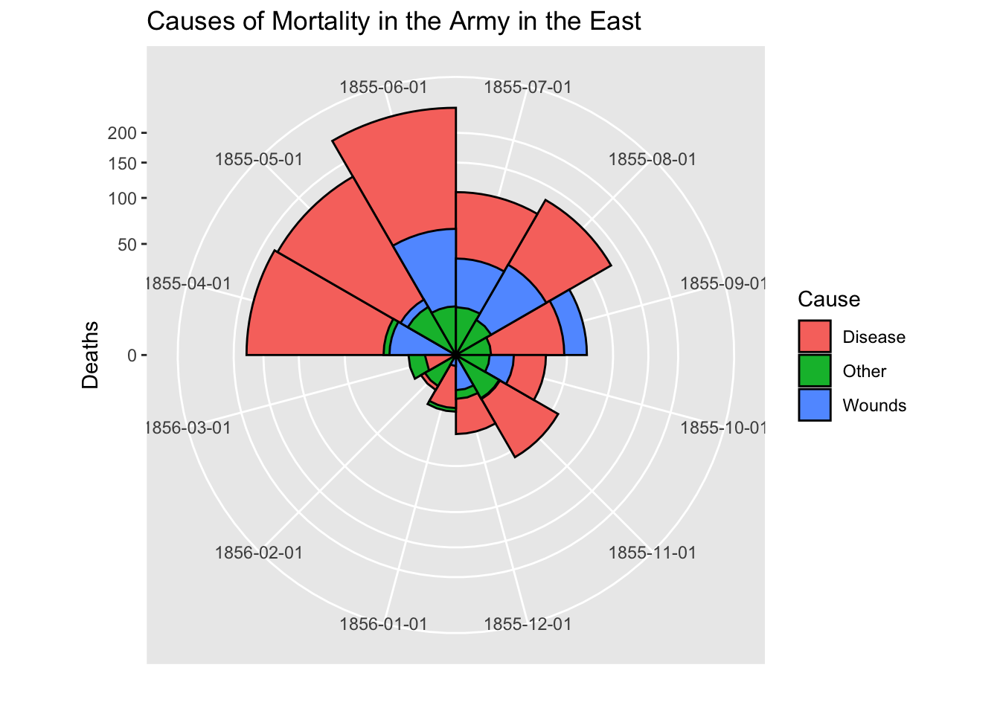
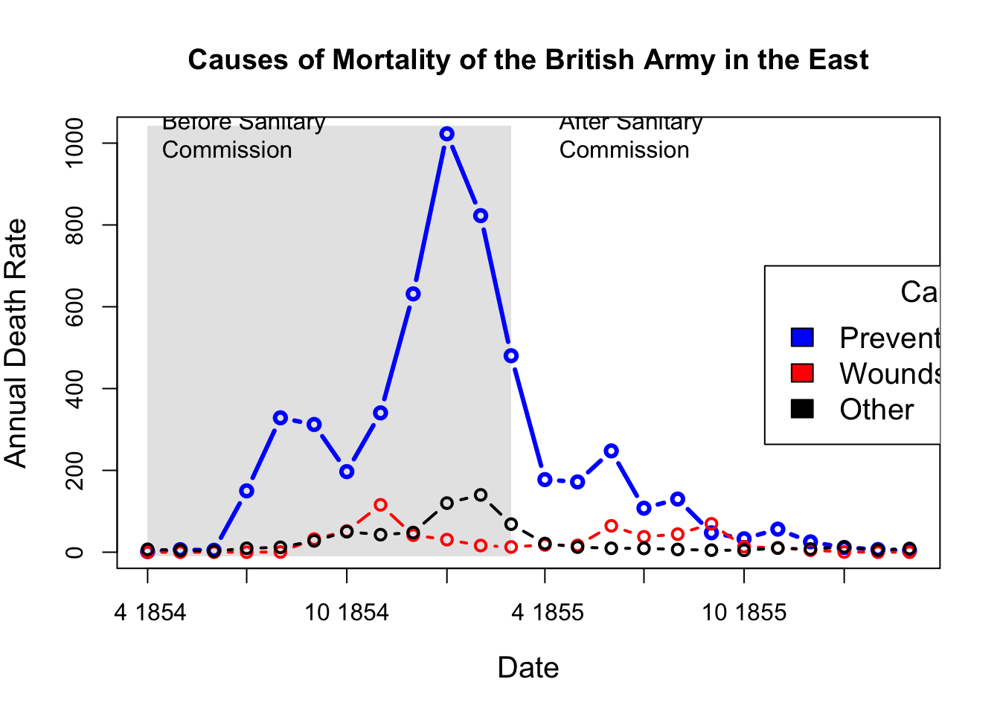
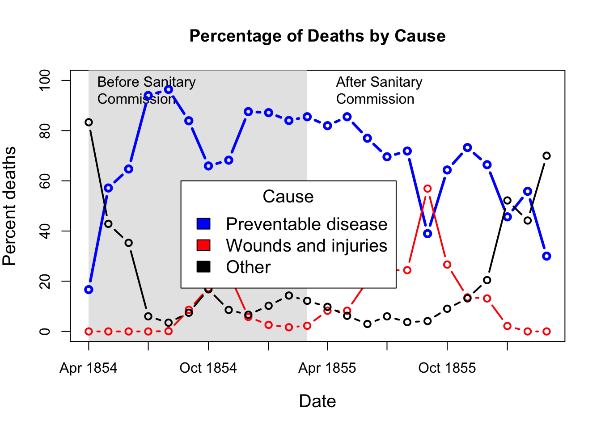

A Appendix A Nightingale’s Data
Nightingale’s data is contained in HistData Package of R. See https://www.rdocumentation.org/packages/HistData/versions/0.8-6/topics/Nightingale
A.1 Basic References
- Florence Nightingale Museum in London: https://www.florence-nightingale.co.uk
- Florence Nightingale biography: https://www.florence-nightingale.co.uk/florence-nightingale-biography/
- Florence Nightingale biography: https://www.florence-nightingale.co.uk/florence-nightingale-biography/
- BBC: Florence Nightingale: Saving lives with statistics: https://www.bbc.co.uk/teach/florence-nightingale-saving-lives-with-statistics/zjksmfr
- Insights in Social History by Hugh Small: http://www.florence-nightingale-avenging-angel.co.uk
- Wikipedia: https://en.wikipedia.org/wiki/Florence_Nightingale
- Life expectancy (from birth) in the United Kingdom from 1765 to 2020: https://www.statista.com/statistics/1040159/life-expectancy-united-kingdom-all-time/
- Cure: Medical Treatment
- Care: Nursing
- Prevention: Public Health
A.2 HistData: Data Sets from the History of Statistics and Data Visualization
- URL: https://cran.r-project.org/web/packages/HistData/index.html
- Description: The ‘HistData’ package provides a collection of small data sets that are interesting and important in the history of statistics and data visualization. The goal of the package is to make these available, both for instructional use and for historical research. Some of these present interesting challenges for graphics or analysis in R.
- Reference Manual: HistData.pdf
- Vignettes: Duplicate and Missing Cases in Snow.deaths
- Reverse Depend: UsingR
A.2.1 Nightingale Datasets
- Details: For a given cause of death, D, annual rates per 1000 are calculated as 12 * 1000 * D / Army, rounded to 1 decimal.
The two panels of Nightingale’s Coxcomb correspond to dates before and after March 1855
- Format: A data frame with 24 observations on the following 10 variables.
- Date: a Date, composed as as.Date(paste(Year, Month, 1, sep=‘-’), “%Y-%b-%d”)
- Month: Month of the Crimean War, an ordered factor
- Year: Year of the Crimean War
- Army: Estimated average monthly strength of the British army
- Disease: Number of deaths from preventable or mitagable zymotic diseases
- Wounds: Number of deaths directly from battle wounds
- Other: Number of deaths from other causes
- Disease.rate: Annual rate of deaths from preventable or mitagable zymotic diseases, per 1000
- Wounds.rate: Annual rate of deaths directly from battle wounds, per 1000
- Other.rate: Annual rate of deaths from other causes, per 1000
A.2.2 References
- Nightingale, F. (1858) Notes on Matters Affecting the Health, Efficiency, and Hospital Administration of the British Army Harrison and Sons, 1858
- Nightingale, F. (1859) A Contribution to the Sanitary History of the British Army during the Late War with Russia London: John W. Parker and Son.
- Small, H. (1998) Florence Nightingale’s statistical diagrams http://www.florence-nightingale-avenging-angel.co.uk/GraphicsPaper/Graphics.htm
- Pearson, M. and Short, I. (2008) Nightingale’s Rose (flash animation). http://understandinguncertainty.org/files/animations/Nightingale11/Nightingale1.html
A.3 Exploratory Data Analysis Using tidyverse Package
A.3.1 Reading Nightingale Data and Glimpse the Structure
library(HistData)
library(tidyverse)
data(Nightingale)
Nightingale## Date Month Year Army Disease Wounds Other Disease.rate Wounds.rate
## 1 1854-04-01 Apr 1854 8571 1 0 5 1.4 0.0
## 2 1854-05-01 May 1854 23333 12 0 9 6.2 0.0
## 3 1854-06-01 Jun 1854 28333 11 0 6 4.7 0.0
## 4 1854-07-01 Jul 1854 28722 359 0 23 150.0 0.0
## 5 1854-08-01 Aug 1854 30246 828 1 30 328.5 0.4
## 6 1854-09-01 Sep 1854 30290 788 81 70 312.2 32.1
## 7 1854-10-01 Oct 1854 30643 503 132 128 197.0 51.7
## 8 1854-11-01 Nov 1854 29736 844 287 106 340.6 115.8
## 9 1854-12-01 Dec 1854 32779 1725 114 131 631.5 41.7
## 10 1855-01-01 Jan 1855 32393 2761 83 324 1022.8 30.7
## 11 1855-02-01 Feb 1855 30919 2120 42 361 822.8 16.3
## 12 1855-03-01 Mar 1855 30107 1205 32 172 480.3 12.8
## 13 1855-04-01 Apr 1855 32252 477 48 57 177.5 17.9
## 14 1855-05-01 May 1855 35473 508 49 37 171.8 16.6
## 15 1855-06-01 Jun 1855 38863 802 209 31 247.6 64.5
## 16 1855-07-01 Jul 1855 42647 382 134 33 107.5 37.7
## 17 1855-08-01 Aug 1855 44614 483 164 25 129.9 44.1
## 18 1855-09-01 Sep 1855 47751 189 276 20 47.5 69.4
## 19 1855-10-01 Oct 1855 46852 128 53 18 32.8 13.6
## 20 1855-11-01 Nov 1855 37853 178 33 32 56.4 10.5
## 21 1855-12-01 Dec 1855 43217 91 18 28 25.3 5.0
## 22 1856-01-01 Jan 1856 44212 42 2 48 11.4 0.5
## 23 1856-02-01 Feb 1856 43485 24 0 19 6.6 0.0
## 24 1856-03-01 Mar 1856 46140 15 0 35 3.9 0.0
## Other.rate
## 1 7.0
## 2 4.6
## 3 2.5
## 4 9.6
## 5 11.9
## 6 27.7
## 7 50.1
## 8 42.8
## 9 48.0
## 10 120.0
## 11 140.1
## 12 68.6
## 13 21.2
## 14 12.5
## 15 9.6
## 16 9.3
## 17 6.7
## 18 5.0
## 19 4.6
## 20 10.1
## 21 7.8
## 22 13.0
## 23 5.2
## 24 9.1glimpse(Nightingale)## Rows: 24
## Columns: 10
## $ Date <date> 1854-04-01, 1854-05-01, 1854-06-01, 1854-07-01, 1854-08-…
## $ Month <ord> Apr, May, Jun, Jul, Aug, Sep, Oct, Nov, Dec, Jan, Feb, Ma…
## $ Year <int> 1854, 1854, 1854, 1854, 1854, 1854, 1854, 1854, 1854, 185…
## $ Army <int> 8571, 23333, 28333, 28722, 30246, 30290, 30643, 29736, 32…
## $ Disease <int> 1, 12, 11, 359, 828, 788, 503, 844, 1725, 2761, 2120, 120…
## $ Wounds <int> 0, 0, 0, 0, 1, 81, 132, 287, 114, 83, 42, 32, 48, 49, 209…
## $ Other <int> 5, 9, 6, 23, 30, 70, 128, 106, 131, 324, 361, 172, 57, 37…
## $ Disease.rate <dbl> 1.4, 6.2, 4.7, 150.0, 328.5, 312.2, 197.0, 340.6, 631.5, …
## $ Wounds.rate <dbl> 0.0, 0.0, 0.0, 0.0, 0.4, 32.1, 51.7, 115.8, 41.7, 30.7, 1…
## $ Other.rate <dbl> 7.0, 4.6, 2.5, 9.6, 11.9, 27.7, 50.1, 42.8, 48.0, 120.0, …A.3.2 Comparison of Death Causes
df_cause <- Nightingale %>%
select(Disease, Wounds, Other) %>%
pivot_longer(cols = everything(), names_to = "Cause", values_to = "Death")
df_cause %>% ggplot(aes(x = Cause, y = Death)) +
geom_bar(stat = "identity")
df_cause %>% ggplot(aes(x = "", y = Death, fill = Cause)) +
geom_bar(width = 1, stat = "identity") +
coord_polar("y", start=0)
total = sum(df_cause$Death)
df_cause %>%
group_by(Cause) %>%
summarize(Rate = round(sum(Death)/total*100, digits = 1))## # A tibble: 3 × 2
## Cause Rate
## <chr> <dbl>
## 1 Disease 80.5
## 2 Other 9.7
## 3 Wounds 9.8df_rate <- Nightingale %>%
select(Date, Army, Disease, Wounds, Other) %>%
mutate(Death_Rate = (Disease + Wounds + Other)/Army,
Disease_Rate = Disease/Army)
df_rate %>% ggplot(aes(x = Date)) +
geom_line(aes(y = Death_Rate)) +
geom_line(aes(y = Disease_Rate), color = "blue") +
geom_vline(xintercept = as.Date("1855-04-01"), color = "red")
A.3.3 Data Wrangling - Tidying Data
- First focus on the rates by cause
- Month, Year columns are redundant and use Date
- When rates are considered, Army, Desease, Wounds and Other columns are not necessary.
- We use long table to apply
ggplot2to visualize data.
dat %>% pivot_longer(cols = "columns kept as a vector", names_to = "variable", values_to = "date")df_fn <- Nightingale %>%
select(Date, "Disease_Rate" = Disease.rate, "Wounds_Rate" = Wounds.rate, "Other_Rate" = Other.rate) %>%
pivot_longer(cols = Disease_Rate:Other_Rate, names_to = "Cause", values_to = "Deaths")
df_fn## # A tibble: 72 × 3
## Date Cause Deaths
## <date> <chr> <dbl>
## 1 1854-04-01 Disease_Rate 1.4
## 2 1854-04-01 Wounds_Rate 0
## 3 1854-04-01 Other_Rate 7
## 4 1854-05-01 Disease_Rate 6.2
## 5 1854-05-01 Wounds_Rate 0
## 6 1854-05-01 Other_Rate 4.6
## 7 1854-06-01 Disease_Rate 4.7
## 8 1854-06-01 Wounds_Rate 0
## 9 1854-06-01 Other_Rate 2.5
## 10 1854-07-01 Disease_Rate 150
## # … with 62 more rowsggplot(df_fn) +
geom_bar(aes(x = Date, y = Deaths, fill = Cause), stat="identity")
Default of the position is “stack”. The other options are “dodge” and “identity”. The option “identity” is not useful for bars, because it overlaps them. See that overlapping by setting a small value for alpha, transparancy.
ggplot(df_fn) +
geom_bar(aes(x = Date, y = Deaths, fill = Cause), stat = "identity", position = "dodge")
df_fn %>% filter(Date >= as.Date("1855-08-01")) %>%
ggplot() +
geom_bar(aes(x = Date, y = Deaths, fill = Cause), stat = "identity", position = "identity", alpha = 0.4)
df_fn %>% filter(Date >= as.Date("1855-08-01")) %>%
ggplot() +
geom_bar(aes(x = Date, y = Deaths, fill = Cause), stat = "identity", position = "dodge")
Let us split the data into two and see the change before and after the Sanitary Commission arrived in the middle of the war, i.e, March 6, 1885.
df_fn_ba <- df_fn %>%
mutate(Regime = if_else(Date < as.Date("1855-04-01"), "Before", "After"))
df_fn_ba %>% filter(Date > as.Date("1855-01-01") & Date < as.Date("1855-06-01"))## # A tibble: 12 × 4
## Date Cause Deaths Regime
## <date> <chr> <dbl> <chr>
## 1 1855-02-01 Disease_Rate 823. Before
## 2 1855-02-01 Wounds_Rate 16.3 Before
## 3 1855-02-01 Other_Rate 140. Before
## 4 1855-03-01 Disease_Rate 480. Before
## 5 1855-03-01 Wounds_Rate 12.8 Before
## 6 1855-03-01 Other_Rate 68.6 Before
## 7 1855-04-01 Disease_Rate 178. After
## 8 1855-04-01 Wounds_Rate 17.9 After
## 9 1855-04-01 Other_Rate 21.2 After
## 10 1855-05-01 Disease_Rate 172. After
## 11 1855-05-01 Wounds_Rate 16.6 After
## 12 1855-05-01 Other_Rate 12.5 Afterdf_fn_ba %>% filter(Regime == "Before") %>%
ggplot() +
geom_bar(aes(x = as.factor(Date), y=Deaths, fill = Cause),
width = 1, position="identity", stat="identity", alpha = 0.5) +
scale_y_sqrt() +
coord_polar(start = 3*pi/2) +
labs(title = "Causes of Mortality in the Army in the East")
df_fn_ba %>% filter(Regime == "After") %>%
ggplot() +
geom_bar(aes(x = as.factor(Date), y=Deaths, fill = Cause),
width = 1, position="identity", stat="identity", alpha = 0.5) +
scale_y_sqrt() +
coord_polar(start = 3*pi/2) +
labs(title = "Causes of Mortality in the Army in the East")
Please refer to the folloing code, f you want to use facet_grid. The argument scales = “free” of facet_grid does not support coord_polar. However, if you add the first two lines, it seems to work. See https://github.com/tidyverse/ggplot2/issues/2815.
cp <- coord_polar(theta = "x", start = 3*pi/2)
cp$is_free <- function() TRUE
df_fn_ba %>% #filter(Regime == "Before") %>%
ggplot() +
geom_bar(aes(x = as.factor(Date), y=Deaths, fill = Cause),
width = 1, position="identity", stat="identity", alpha = 0.5) +
scale_y_sqrt() + # death scale is proportional to the area
cp +
facet_grid(. ~ Regime, labeller = label_both, scales = "free") +
labs(title = "Causes of Mortality in the Army in the East") +
theme(aspect.ratio = 1)
df_fn_before <- df_fn %>% filter(Date < as.Date("1855-04-01"))
nrow(df_fn_before)## [1] 36df_fn_after <- df_fn %>% filter(Date >= as.Date("1855-04-01"))
nrow(df_fn_after)## [1] 36ggplot(df_fn_before) +
geom_bar(aes(x = Date, y = Deaths, fill = Cause), stat = "identity", position = "dodge")
ggplot(df_fn_after) +
geom_bar(aes(x = Date, y = Deaths, fill = Cause), stat = "identity", position = "dodge")
A.4 Original Code in Nightingale document
A.4.1 reshape Package: Flexibly Reshape Data
- Description: Flexibly restructure and aggregate data using just two functions: melt and cast.
- URL: https://CRAN.R-project.org/package=reshape
- HP of the Author: http://had.co.nz/reshape/
- Reference Manual: reshape.pdf
# NOT RUN {
library(HistData)
data(Nightingale)
# For some graphs, it is more convenient to reshape death rates to long format
# keep only Date and death rates
require(reshape)## 要求されたパッケージ reshape をロード中です##
## 次のパッケージを付け加えます: 'reshape'## 以下のオブジェクトは 'package:dplyr' からマスクされています:
##
## rename## 以下のオブジェクトは 'package:tidyr' からマスクされています:
##
## expand, smithsNight<- Nightingale[,c(1,8:10)]
melted <- melt(Night, "Date")
names(melted) <- c("Date", "Cause", "Deaths")
melted$Cause <- sub("\\.rate", "", melted$Cause)
melted$Regime <- ordered( rep(c(rep('Before', 12), rep('After', 12)), 3),
levels=c('Before', 'After'))
Night <- melted
# subsets, to facilitate separate plotting
Night1 <- subset(Night, Date < as.Date("1855-04-01"))
Night2 <- subset(Night, Date >= as.Date("1855-04-01"))
# sort according to Deaths in decreasing order, so counts are not obscured [thx: Monique Graf]
Night1 <- Night1[order(Night1$Deaths, decreasing=TRUE),]
Night2 <- Night2[order(Night2$Deaths, decreasing=TRUE),]
# merge the two sorted files
Night <- rbind(Night1, Night2)
require(ggplot2)
# Before plot
cxc1 <- ggplot(Night1, aes(x = factor(Date), y=Deaths, fill = Cause)) +
# do it as a stacked bar chart first
geom_bar(width = 1, position="identity", stat="identity", color="black") +
# set scale so area ~ Deaths
scale_y_sqrt()
# A coxcomb plot = bar chart + polar coordinates
cxc1 + coord_polar(start=3*pi/2) +
ggtitle("Causes of Mortality in the Army in the East") +
xlab("")
# After plot
cxc2 <- ggplot(Night2, aes(x = factor(Date), y=Deaths, fill = Cause)) +
geom_bar(width = 1, position="identity", stat="identity", color="black") +
scale_y_sqrt()
cxc2 + coord_polar(start=3*pi/2) +
ggtitle("Causes of Mortality in the Army in the East") +
xlab("")
The following part does not work. Error!
# do both together, with faceting
cxc <- ggplot(Night, aes(x = factor(Date), y=Deaths, fill = Cause)) +
geom_bar(width = 1, position="identity", stat="identity", color="black") +
scale_y_sqrt() +
facet_grid(. ~ Regime, scales="free", labeller=label_both)
facet_grid(. ~ Regime, labeller=label_both)
cxc + coord_polar(start=3*pi/2) +
ggtitle("Causes of Mortality in the Army in the East") +
xlab("")# NOT RUN {
## What if she had made a set of line graphs?
# these plots are best viewed with width ~ 2 * height
colors <- c("blue", "red", "black")
with(Nightingale, {
plot(Date, Disease.rate, type="n", cex.lab=1.25,
ylab="Annual Death Rate", xlab="Date", xaxt="n",
main="Causes of Mortality of the British Army in the East");
# background, to separate before, after
rect(as.Date("1854/4/1"), -10, as.Date("1855/3/1"),
1.02*max(Disease.rate), col=gray(.90), border="transparent");
text( as.Date("1854/4/1"), .98*max(Disease.rate), "Before Sanitary\nCommission", pos=4);
text( as.Date("1855/4/1"), .98*max(Disease.rate), "After Sanitary\nCommission", pos=4);
# plot the data
points(Date, Disease.rate, type="b", col=colors[1], lwd=3);
points(Date, Wounds.rate, type="b", col=colors[2], lwd=2);
points(Date, Other.rate, type="b", col=colors[3], lwd=2)
}
)
# add custom Date axis and legend
axis.Date(1, at=seq(as.Date("1854/4/1"), as.Date("1856/3/1"), "3 months"), format="%b %Y")
legend(as.Date("1855/10/20"), 700, c("Preventable disease", "Wounds and injuries", "Other"),
col=colors, fill=colors, title="Cause", cex=1.25)
# Alternatively, show each cause of death as percent of total
Nightingale <- within(Nightingale, {
Total <- Disease + Wounds + Other
Disease.pct <- 100*Disease/Total
Wounds.pct <- 100*Wounds/Total
Other.pct <- 100*Other/Total
})
colors <- c("blue", "red", "black")
with(Nightingale, {
plot(Date, Disease.pct, type="n", ylim=c(0,100), cex.lab=1.25,
ylab="Percent deaths", xlab="Date", xaxt="n",
main="Percentage of Deaths by Cause");
# background, to separate before, after
rect(as.Date("1854/4/1"), -10, as.Date("1855/3/1"),
1.02*max(Disease.rate), col=gray(.90), border="transparent");
text( as.Date("1854/4/1"), .98*max(Disease.pct), "Before Sanitary\nCommission", pos=4);
text( as.Date("1855/4/1"), .98*max(Disease.pct), "After Sanitary\nCommission", pos=4);
# plot the data
points(Date, Disease.pct, type="b", col=colors[1], lwd=3);
points(Date, Wounds.pct, type="b", col=colors[2], lwd=2);
points(Date, Other.pct, type="b", col=colors[3], lwd=2)
}
)
# add custom Date axis and legend
axis.Date(1, at=seq(as.Date("1854/4/1"), as.Date("1856/3/1"), "3 months"), format="%b %Y")
legend(as.Date("1854/8/20"), 60, c("Preventable disease", "Wounds and injuries", "Other"),
col=colors, fill=colors, title="Cause", cex=1.25)
# }